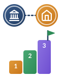

1
Requisiti giuridici
Consenso genitoriale:obbligatorio per gli under 14.L. 132/2025, art. 4, c. 4 · D.Lgs. 196/2003, art. 2-quinquies
Informativa privacy:trasparente e adatta ai minori.GDPR, artt. 13–14 · D.M. 166/2025, par. 3.3
Opt-out:garantito, senza penalizzazioni didattiche o valutative.D.M. 166/2025, par. 3.2
2
Modalità didattica d’aula e domestica

Approccio didattico:scaffolding guidato dal docente (prompt pre-impostati, griglie di fact-checking).
Piattaforme:uso esclusivo di ambienti e account educational d’istituto protetti.
Divieti tassativi:divieto assoluto di sentiment analysis ed emotion recognition.AI Act, art. 5, par. 1, lett. f
3
Obiettivi pedagogici
Pensiero critico:ricerca delle «allucinazioni», debunking e valutazione delle fonti.DigComp 2.2, comp. 1.2 · D.M. 166/2025, par. 4.4
Discipline STEM e inclusione:problem solving, coding e supporto BES/DSA/PEI/PDP.D.M. 184/2023 · Indicazioni Nazionali 2025
Trasparenza:dichiarazione dell’uso dell’IA nei compiti svolti.AI Act, artt. 14 e 86
4
Sicurezza tecnica e prompting
Prompting sicuro:de-identificato, senza nomi propri né dati personali degli alunni.GDPR, art. 5 · D.M. 166/2025, par. 3.2
Contratti con i fornitori:nomina ex art. 28 GDPR con clausola di Zero Data Retention per l’addestramento.
Governance:inserimento nel PTOF, DPIA/FRIA (HUDERIA) e censimento su Piattaforma Unica.D.M. 166/2025, par. 5